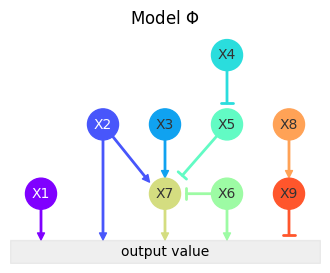
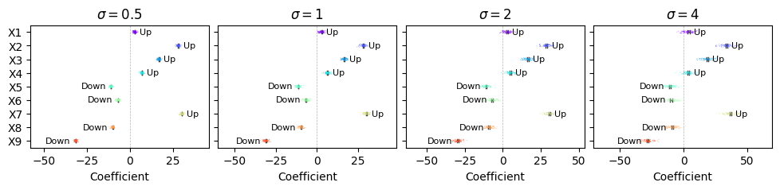
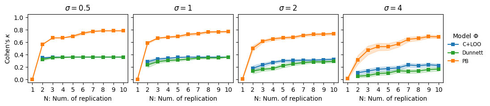
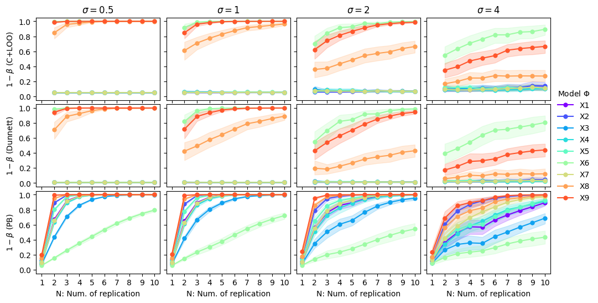
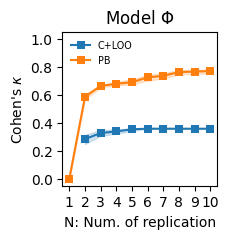
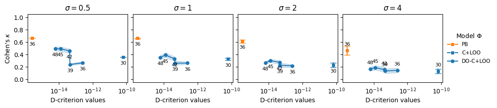

Benchmarking with Sim1
[1]:
from typing import NamedTuple, Callable
import warnings
import matplotlib.pyplot as plt
import numpy as np
import pandas as pd
import seaborn as sns
from tqdm.notebook import tqdm
from biodoe_tools.preferences import kwarg_savefig, outputdir, kwarg_err
from biodoe_tools.simulation import (
Sim1, kappa, BenchmarkingPipeline,
DOptimizationBenchmarkingPipeline
)
[2]:
class Config(NamedTuple):
savefig: bool = True
out: str = outputdir
configuration: dict = {
"": {"simulator": Sim1},
}
noise_arr: list = [.5, 1, 2, 4]
n_range: np.ndarray = np.arange(1, 11)
n_rep: int = 30
dunnett: bool = True
evaluation_metric: Callable = kappa
metric_name: str = "Cohen's $\kappa$"
N: int = 3
n_add: list = np.arange(2, 7).astype(int)
extension: str = ".pdf"
conf = Config()
[3]:
for suffix, d in conf.configuration.items():
fig, ax = plt.subplots(figsize=(4, 3))
d["simulator"]().plot(ax=ax)
ax.set_title(d["simulator"]().name)
if conf.savefig:
fig.savefig(f"{conf.out}/sim_model{suffix}{conf.extension}", **kwarg_savefig)

[4]:
pipe = BenchmarkingPipeline(
configuration=conf.configuration,
noise_arr=conf.noise_arr,
n_range=conf.n_range,
n_rep=conf.n_rep,
dunnett=conf.dunnett,
evaluation_metric=conf.evaluation_metric,
metric_name=conf.metric_name
)
[5]:
pipe.plot(savefig=conf.savefig, extension=conf.extension)



[6]:
for suffix, bm in pipe.configuration.items():
fig, ax = bm.plot_benchmarking(
unit_x_length=2, unit_y_length=2,
noise=1, show_dunnet=False
)
if conf.savefig:
fig.savefig(f"{conf.out}/benchmarks_default{suffix}{conf.extension}", **kwarg_savefig)

[7]:
dopipe = DOptimizationBenchmarkingPipeline(
from_pipeline=pipe,
N=conf.N,
n_add=conf.n_add
)
[8]:
dopipe.plot(savefig=conf.savefig, extension=conf.extension)


[ ]: